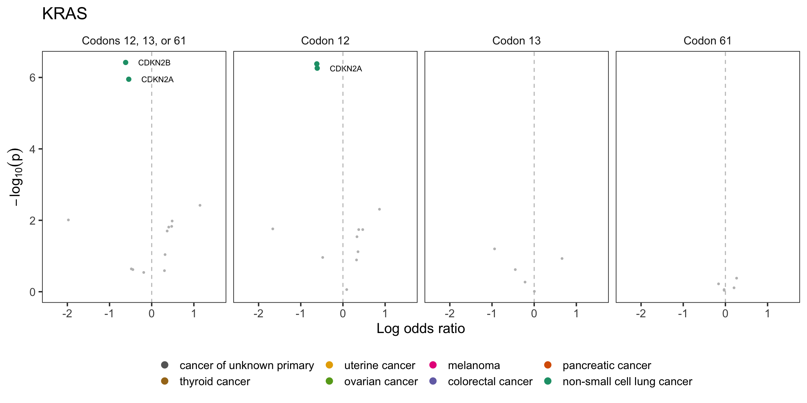
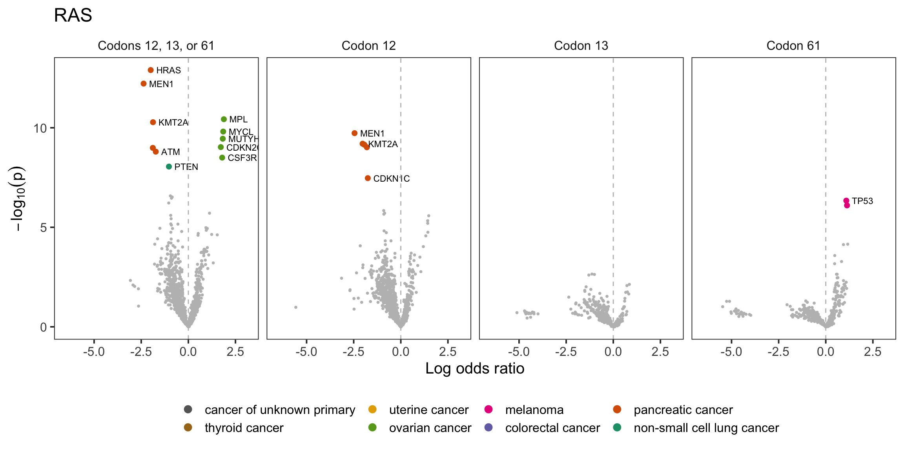
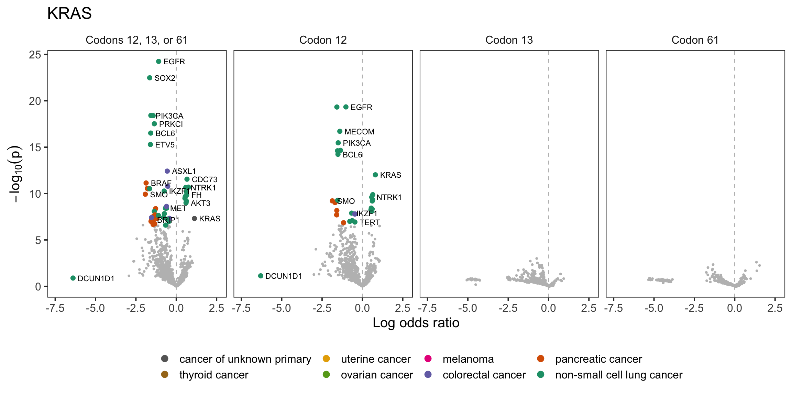

Co-mutation analysis for RAS hotspot variants
20 August, 2022
Last updated: 2022-08-20
Checks: 6 1
Knit directory: genie/
This reproducible R Markdown analysis was created with workflowr (version 1.7.0). The Checks tab describes the reproducibility checks that were applied when the results were created. The Past versions tab lists the development history.
Great! Since the R Markdown file has been committed to the Git repository, you know the exact version of the code that produced these results.
The global environment had objects present when the code in the R
Markdown file was run. These objects can affect the analysis in your R
Markdown file in unknown ways. For reproduciblity it’s best to always
run the code in an empty environment. Use wflow_publish or
wflow_build to ensure that the code is always run in an
empty environment.
The following objects were defined in the global environment when these results were created:
| Name | Class | Size |
|---|---|---|
| rv | list | 2.9 Kb |
The command set.seed(20220803) was run prior to running
the code in the R Markdown file. Setting a seed ensures that any results
that rely on randomness, e.g. subsampling or permutations, are
reproducible.
Great job! Recording the operating system, R version, and package versions is critical for reproducibility.
Nice! There were no cached chunks for this analysis, so you can be confident that you successfully produced the results during this run.
Great job! Using relative paths to the files within your workflowr project makes it easier to run your code on other machines.
Great! You are using Git for version control. Tracking code development and connecting the code version to the results is critical for reproducibility.
The results in this page were generated with repository version 540aa2c. See the Past versions tab to see a history of the changes made to the R Markdown and HTML files.
Note that you need to be careful to ensure that all relevant files for
the analysis have been committed to Git prior to generating the results
(you can use wflow_publish or
wflow_git_commit). workflowr only checks the R Markdown
file, but you know if there are other scripts or data files that it
depends on. Below is the status of the Git repository when the results
were generated:
Ignored files:
Ignored: .Rhistory
Ignored: todo.org
Unstaged changes:
Modified: public/table/co_mutation_nscc_allele.Rmd/any_mutation_(gene_pathways)_mutation_signature.csv
Modified: public/table/co_mutation_nscc_allele.Rmd/any_mutation_agecat.csv
Modified: public/table/co_mutation_nscc_allele.Rmd/any_mutation_mutation_signature.csv
Modified: public/table/co_mutation_nscc_allele.Rmd/any_mutation_race.csv
Modified: public/table/co_mutation_nscc_allele.Rmd/any_mutation_sample_type.csv
Modified: public/table/co_mutation_nscc_allele.Rmd/any_mutation_tmb.csv
Modified: public/table/co_mutation_nscc_allele.Rmd/cosmic_driver_mutation_(gene_pathways).csv
Modified: public/table/co_mutation_nscc_allele.Rmd/cosmic_driver_mutation_(gene_pathways)_sample_type.csv
Modified: public/table/co_mutation_nscc_allele.Rmd/cosmic_driver_mutation_(gene_pathways)_sex.csv
Modified: public/table/co_mutation_nscc_allele.Rmd/cosmic_driver_mutation_tmb.csv
Modified: public/table/co_mutation_nscc_allele.Rmd/inactivating_mutation_race.csv
Note that any generated files, e.g. HTML, png, CSS, etc., are not included in this status report because it is ok for generated content to have uncommitted changes.
These are the previous versions of the repository in which changes were
made to the R Markdown (analysis/co-mutation.Rmd) and HTML
(docs/co-mutation.html) files. If you’ve configured a
remote Git repository (see ?wflow_git_remote), click on the
hyperlinks in the table below to view the files as they were in that
past version.
| File | Version | Author | Date | Message |
|---|---|---|---|---|
| Rmd | 2fda1f3 | rscharpf | 2022-08-18 | Initialize RAS reproducibility workflowr |
| html | 2fda1f3 | rscharpf | 2022-08-18 | Initialize RAS reproducibility workflowr |
library(devtools)
library(magrittr)
library(tidyverse)
library(genie.6.1)
library(kableExtra)
library(scales)
library(ggthemes)
library(RColorBrewer)
library(here)
results <- here("output", "co-mutation", "summarize_models.R",
"combined.rds") %>%
readRDS()Model
We assessed the co-occurence of RAS hotspot variants and somatic variant in non-RAS genes at the sample-level. For patients with multiple samples of a single cancer type, we evaluated whether there was more than one distinct co-mutation pattern. If a single pattern was identified, we randomly selected one of the samples. If multiple patterns were found, we selected the sample with the most mutations in the gene pair under evaluation. For example, for co-mutation analysis of KRAS 12C variants and STK11, if a patient had two sequenced tumors and one of the tumors had no mutations (no RAS variant or variant or STK11 variant) while one sample had a mutation in RAS, we selected the sample with the RAS variant. In the event of a tie (the patterns were distinct and the number of mutations were the same), we randomly selected one sample. For patients with multiple samples of different cancer types, we randomly selected one of the samples without regard to the number of mutations. Below, we show the resulting frequencies of co-occurrence for KRAS 12C and STK11. The columns correspond to the number of patients without a variant in either gene (‘00’), a variant in RAS but not gene STK11 (‘10’), a variant in STK11 but not KRAS (‘01’), and a variant in both genes (‘11’). The total number of patients for a given cancer type will be less than the total number of patients in GENIE if (1) some patients were sequenced on platforms that do not contain the RAS gene and/or the non-RAS gene and (2) due to the random sampling implemented for patients with multiple cancer types sequenced.
data(mutation_ct, package="contingency.table")
filter(mutation_ct, category=="overall") %>%
unnest(data) %>%
filter(nonras=="STK11", ras=="KRAS_12C") %>%
kable("html", format.args=list(big.mark=",")) %>%
kable_styling(full_width=FALSE) | category | cancer | ras | nonras | 00 | 10 | 01 | 11 | variable | n | number_ras | number_nonras |
|---|---|---|---|---|---|---|---|---|---|---|---|
| overall | non-small cell lung cancer | KRAS_12C | STK11 | 2,951 | 346 | 413 | 130 | overall | 3,840 | 476 | 543 |
If variants at KRAS 12C and STK11 were independent, we could estimate the frequency of their co-occurence as the product of the marginal prevalence:
\[\begin{align*} Pr(KRAS\text{12C}, STK11) = Pr(KRAS \text{12C}) \times Pr(STK11). \end{align*}\]
To allow for departures from independence, we fit a log linear model to this data using an interaction term that measures the association between KRAS 12C and STK11. To estimate the association for each cancer type but allow sharing of information between the available cancers in GENIE, we fit a hierarchical log-linear model. We restrict our analysis to cancers with at least 20 patients sequenced on platforms that included both genes. Representing the data as a K-dimensional array of 2 \(\times\) 2 tables (K denotes the number of cancers with at least 20 patients), our model for the observed frequency \(y\) in row \(i\) and column \(j\) of cancer \(k\) is given by
\[\begin{align*} y_{ijk} &\sim \text{Poisson}(\theta_{ijk})\\ \log(\theta_{ijk}) &= \eta_k + \lambda_{ik}^\text{RAS} + \lambda_{jk}^{\text{X}} + \lambda_{ijk}^{\text{RAS, X}}\\ \eta_k &\sim \text{Normal}(0, 5)\\ \lambda_{ik}^{\text{RAS}}, \lambda_{jk}^{\text{X}}, \lambda_{ijk}^{\text{RAS, X}} &\sim \text{Normal}(\mu_\beta, \sigma)\\ \mu_\beta &\sim \text{Normal}(0, 5)\\ \sigma &\sim \text{Cauchy}(0, 2.5), ~\text{where} \end{align*}\] \(\lambda_{ijk}^{\text{RAS}, X}\) is the log odds ratio for an association between RAS and gene \(X\) – non-zero values indicate a departure from independence.
For volcano plots, we highlight genes with Bonferonni-adjusted p-value less than 0.01 and color code the different cancers.
colors <- here("output", "co-mutation", "summarize_models.R",
"colors.rds") %>%
readRDS()
colors <- setNames(colors$color, colors$cancer)
volcanofig <- function(x, colors){
dat0 <- x %>%
filter(p < cutoff_ntest)
signif <- filter(x, p >= cutoff_ntest | abs(`50%`) > 6)
title <- x[1, ] %>%
separate(ras, c("hugo_symbol", "codon_range"), sep="_") %>%
pull(hugo_symbol)
A <- dat0 %>%
ggplot(aes(`50%`, p)) +
##geom_vline(xintercept=0, color="gray") +
geom_point(color="gray", size=0.7) +
theme_bw(base_size=15) +
xlab("Log odds ratio") +
ylab(expression(-log[10](p))) +
geom_point(data=signif,
size=2,
aes(color=cancer)) +
geom_text(data=signif,
aes(label=nonras),
nudge_x=0.3,
size=3,
hjust=0,
check_overlap=TRUE) +
geom_vline(xintercept=0, color="gray", linetype="dashed") +
scale_x_continuous(expand=expansion(mult=0.2)) +
scale_color_manual(values=colors) +
guides(color=guide_legend(title="", reverse=TRUE,
override.aes=list(size=3))) +
theme(legend.position="bottom",
strip.background=element_blank(),
panel.grid=element_blank()) +
facet_wrap(~codons, ncol=4) +
ggtitle(title)
A
}rasg <- c("RAS_12-61", "RAS_12", "RAS_13", "RAS_61")
krasg <- c("KRAS_12-61", "KRAS_12", "KRAS_13", "KRAS_61")
hrasg <- c("HRAS_12-61", "HRAS_12", "HRAS_13", "HRAS_61")
nrasg <- c("NRAS_12-61", "NRAS_12", "NRAS_13", "NRAS_61")
rlabels <- c("Codons 12, 13, or 61",
"Codon 12", "Codon 13", "Codon 61") %>%
setNames(rasg)
nms <- tibble(ras=c(rasg, krasg, hrasg, nrasg),
codons=rep(rlabels, 4)) %>%
mutate(codons=factor(codons, rlabels))Any mutation
Contingency table: matched normal sequencing, >100 Ras, > 100 gene X mutations
multicancer <- filter(results, cancer_group == "multi") %>%
unnest(data) %>%
left_join(nms, by="ras") %>%
group_by(alteration_group, ras) %>%
nest()
multicancer %>%
filter(alteration_group=="Any mutation") %>%
filter(ras %in% rasg) %>%
ungroup() %>%
unnest(data) %>%
volcanofig(colors)
| Version | Author | Date |
|---|---|---|
| 2fda1f3 | rscharpf | 2022-08-18 |
multicancer %>%
filter(alteration_group=="Any mutation") %>%
filter(ras %in% krasg) %>%
ungroup() %>%
unnest(data) %>%
volcanofig(colors)
| Version | Author | Date |
|---|---|---|
| 2fda1f3 | rscharpf | 2022-08-18 |
multicancer %>%
filter(alteration_group=="Any mutation") %>%
filter(ras %in% nrasg) %>%
ungroup() %>%
unnest(data) %>%
volcanofig(colors)
| Version | Author | Date |
|---|---|---|
| 2fda1f3 | rscharpf | 2022-08-18 |
Inactivating mutations
Contingency table: matched normal sequencing, >50 Ras, >50 gene X mutations
multicancer %>%
filter(alteration_group=="Inactivating mutation") %>%
filter(ras %in% rasg) %>%
ungroup() %>%
unnest(data) %>%
volcanofig(colors)
| Version | Author | Date |
|---|---|---|
| 2fda1f3 | rscharpf | 2022-08-18 |
multicancer %>%
filter(alteration_group=="Inactivating mutation") %>%
filter(ras %in% krasg) %>%
ungroup() %>%
unnest(data) %>%
volcanofig(colors)
| Version | Author | Date |
|---|---|---|
| 2fda1f3 | rscharpf | 2022-08-18 |
multicancer %>%
filter(alteration_group=="Inactivating mutation") %>%
filter(ras %in% nrasg) %>%
ungroup() %>%
unnest(data) %>%
volcanofig(colors)
| Version | Author | Date |
|---|---|---|
| 2fda1f3 | rscharpf | 2022-08-18 |
Deletions
Contingency table: > 50 RAS variants, 50 amplifications
Deep deletions
multicancer %>%
filter(alteration_group=="Deletion") %>%
filter(ras %in% rasg) %>%
ungroup() %>%
unnest(data) %>%
volcanofig(colors)
| Version | Author | Date |
|---|---|---|
| 2fda1f3 | rscharpf | 2022-08-18 |
multicancer %>%
filter(alteration_group=="Deletion") %>%
filter(ras %in% krasg) %>%
ungroup() %>%
unnest(data) %>%
volcanofig(colors)
| Version | Author | Date |
|---|---|---|
| 2fda1f3 | rscharpf | 2022-08-18 |
multicancer %>%
filter(alteration_group=="Deletion") %>%
filter(ras %in% nrasg) %>%
ungroup() %>%
unnest(data) %>%
volcanofig(colors)
| Version | Author | Date |
|---|---|---|
| 2fda1f3 | rscharpf | 2022-08-18 |
Any deletion
multicancer %>%
filter(alteration_group=="Any deletion") %>%
filter(ras %in% rasg) %>%
ungroup() %>%
unnest(data) %>%
volcanofig(colors)
| Version | Author | Date |
|---|---|---|
| 2fda1f3 | rscharpf | 2022-08-18 |
multicancer %>%
filter(alteration_group=="Any deletion") %>%
filter(ras %in% krasg) %>%
ungroup() %>%
unnest(data) %>%
volcanofig(colors)
| Version | Author | Date |
|---|---|---|
| 2fda1f3 | rscharpf | 2022-08-18 |
multicancer %>%
filter(alteration_group=="Any deletion") %>%
filter(ras %in% nrasg) %>%
ungroup() %>%
unnest(data) %>%
volcanofig(colors)
| Version | Author | Date |
|---|---|---|
| 2fda1f3 | rscharpf | 2022-08-18 |
Amplifcations
Contingency table: > 50 RAS variants, 50 amplifications
High copy amplifications
multicancer %>%
filter(alteration_group=="Amplification") %>%
filter(ras %in% rasg) %>%
ungroup() %>%
unnest(data) %>%
volcanofig(colors)
| Version | Author | Date |
|---|---|---|
| 2fda1f3 | rscharpf | 2022-08-18 |
multicancer %>%
filter(alteration_group=="Amplification") %>%
filter(ras %in% rasg) %>%
ungroup() %>%
unnest(data) %>%
filter(abs(`50%`) > 6) %>%
as.data.frame() [1] alteration_group ras cancer_group confounder
[5] nonras cancer number_ras number_nonras
[9] Parameter mean se_mean sd
[13] 2.5% 5% 25% 50%
[17] 75% 95% 97.5% n_eff
[21] Rhat variable z p
[25] 00 10 01 11
[29] n chisq_stat chisq_p chisq_padj
[33] is_driver cutoff_nmodel cutoff_ntest codons
<0 rows> (or 0-length row.names)multicancer %>%
filter(alteration_group=="Amplification") %>%
filter(ras %in% krasg) %>%
ungroup() %>%
unnest(data) %>%
volcanofig(colors)
| Version | Author | Date |
|---|---|---|
| 2fda1f3 | rscharpf | 2022-08-18 |
multicancer %>%
filter(alteration_group=="Amplification") %>%
filter(ras %in% nrasg) %>%
ungroup() %>%
unnest(data) %>%
volcanofig(colors)
| Version | Author | Date |
|---|---|---|
| 2fda1f3 | rscharpf | 2022-08-18 |
Any copy number gain
multicancer %>%
filter(alteration_group=="Any amplification") %>%
filter(ras %in% rasg) %>%
ungroup() %>%
unnest(data) %>%
volcanofig(colors)
| Version | Author | Date |
|---|---|---|
| 2fda1f3 | rscharpf | 2022-08-18 |
multicancer %>%
filter(alteration_group=="Any amplification") %>%
filter(ras %in% rasg) %>%
ungroup() %>%
unnest(data) %>%
filter(abs(`50%`) > 6) %>%
as.data.frame() alteration_group ras cancer_group confounder nonras
1 Any amplification RAS_12-61 multi none DCUN1D1
2 Any amplification RAS_12 multi none DCUN1D1
cancer number_ras number_nonras Parameter mean
1 non-small cell lung cancer 1079 64 beta[1,4] -7.553015
2 non-small cell lung cancer 917 64 beta[1,4] -7.217140
se_mean sd 2.5% 5% 25% 50% 75%
1 0.1570446 5.070841 -16.82059 -14.27767 -9.083407 -6.646131 -4.831339
2 0.1609949 5.117943 -16.89974 -13.66918 -8.460379 -6.263984 -4.584033
95% 97.5% n_eff Rhat variable z p 00 10 01
1 -3.148673 -2.807672 1042.591 0.9991265 <NA> -1.489499 0.87 2591 1079 64
2 -3.074139 -2.739668 1010.571 1.0003423 <NA> -1.410164 0.80 2753 917 64
11 n chisq_stat chisq_p chisq_padj is_driver cutoff_nmodel cutoff_ntest
1 0 3734 25.052 6.25 5.03 FALSE 5.93 6.88
2 0 3734 19.870 5.08 3.92 FALSE 5.92 6.70
codons
1 Codons 12, 13, or 61
2 Codon 12multicancer %>%
filter(alteration_group=="Any amplification") %>%
filter(ras %in% krasg) %>%
ungroup() %>%
unnest(data) %>%
volcanofig(colors)
| Version | Author | Date |
|---|---|---|
| 2fda1f3 | rscharpf | 2022-08-18 |
multicancer %>%
filter(alteration_group=="Any amplification") %>%
filter(ras %in% nrasg) %>%
ungroup() %>%
unnest(data) %>%
volcanofig(colors)
| Version | Author | Date |
|---|---|---|
| 2fda1f3 | rscharpf | 2022-08-18 |
Rearrangements
Contingency tables: > 100 Ras, 50 occurrences of a gene involved in a fusion
multicancer %>%
filter(alteration_group=="Rearrangement") %>%
filter(ras %in% rasg) %>%
ungroup() %>%
unnest(data) %>%
volcanofig(colors)
| Version | Author | Date |
|---|---|---|
| 2fda1f3 | rscharpf | 2022-08-18 |
multicancer %>%
filter(alteration_group=="Rearrangement") %>%
filter(ras %in% krasg) %>%
ungroup() %>%
unnest(data) %>%
volcanofig(colors)
| Version | Author | Date |
|---|---|---|
| 2fda1f3 | rscharpf | 2022-08-18 |
multicancer %>%
filter(alteration_group=="Rearrangement") %>%
filter(ras %in% nrasg) %>%
ungroup() %>%
unnest(data) %>%
volcanofig(colors)
| Version | Author | Date |
|---|---|---|
| 2fda1f3 | rscharpf | 2022-08-18 |
multicancer %>%
filter(alteration_group=="Rearrangement") %>%
unnest(data) %>%
ungroup() %>%
filter(abs(`50%`) > 6) %>%
select(-c(Parameter, sd, mean, se_mean, `5%`, `95%`,
n_eff, Rhat, variable,
`25%`, `75%`, is_driver,
cutoff_nmodel, cutoff_ntest, z)) %>%
mutate(across(c(9:12, 18:20), round, 3)) %>%
slice_head() %>%
kbl() %>%
kable_styling()| alteration_group | ras | cancer_group | confounder | nonras | cancer | number_ras | number_nonras | 2.5% | 50% | 97.5% | p | 00 | 10 | 01 | 11 | n | chisq_stat | chisq_p | chisq_padj | codons |
|---|---|---|---|---|---|---|---|---|---|---|---|---|---|---|---|---|---|---|---|---|
| Rearrangement | RAS_12-61 | multi | none | RET | non-small cell lung cancer | 3008 | 60 | -13.263 | -6.303 | -2.973 | 1.91 | 7063 | 3008 | 60 | 0 | 10131 | 24.078 | 6.03 | 4.86 | Codons 12, 13, or 61 |
csv files
Multi-cancer model
Dependency between Ras and alteration X is modeled hierarchically across all cancer types.
Any mutation: csv
Inactivating mutation: csv
Deep deletion: csv
Any deletion: csv
High copy amplification: csv
Any gain: csv
Rearrangement: csv
sessionInfo()R version 4.2.1 (2022-06-23)
Platform: x86_64-apple-darwin21.5.0 (64-bit)
Running under: macOS Monterey 12.5.1
Matrix products: default
BLAS: /usr/local/Cellar/openblas/0.3.20/lib/libopenblasp-r0.3.20.dylib
LAPACK: /usr/local/Cellar/r/4.2.1/lib/R/lib/libRlapack.dylib
locale:
[1] en_US.UTF-8/en_US.UTF-8/en_US.UTF-8/C/en_US.UTF-8/en_US.UTF-8
attached base packages:
[1] stats graphics grDevices utils datasets methods base
other attached packages:
[1] here_1.0.1 RColorBrewer_1.1-3 ggthemes_4.2.4 scales_1.2.0
[5] kableExtra_1.3.4 genie.6.1_1.1.1 forcats_0.5.1 stringr_1.4.0
[9] dplyr_1.0.9 purrr_0.3.4 readr_2.1.2 tidyr_1.2.0
[13] tibble_3.1.8 ggplot2_3.3.6 tidyverse_1.3.2 magrittr_2.0.3
[17] devtools_2.4.4 usethis_2.1.6 workflowr_1.7.0
loaded via a namespace (and not attached):
[1] fs_1.5.2 bit64_4.0.5 lubridate_1.8.0
[4] webshot_0.5.3 httr_1.4.3 rprojroot_2.0.3
[7] tools_4.2.1 profvis_0.3.7 backports_1.4.1
[10] bslib_0.4.0 utf8_1.2.2 R6_2.5.1
[13] DBI_1.1.3 colorspace_2.0-3 urlchecker_1.0.1
[16] withr_2.5.0 tidyselect_1.1.2 prettyunits_1.1.1
[19] processx_3.7.0 bit_4.0.4 compiler_4.2.1
[22] git2r_0.30.1 cli_3.3.0 rvest_1.0.2
[25] xml2_1.3.3 labeling_0.4.2 sass_0.4.2
[28] callr_3.7.1 systemfonts_1.0.4 digest_0.6.29
[31] svglite_2.1.0 rmarkdown_2.14 pkgconfig_2.0.3
[34] htmltools_0.5.3 sessioninfo_1.2.2 dbplyr_2.2.1
[37] fastmap_1.1.0 highr_0.9 htmlwidgets_1.5.4
[40] rlang_1.0.4 readxl_1.4.0 rstudioapi_0.13
[43] shiny_1.7.2 farver_2.1.1 jquerylib_0.1.4
[46] generics_0.1.3 jsonlite_1.8.0 vroom_1.5.7
[49] googlesheets4_1.0.1 Rcpp_1.0.9 munsell_0.5.0
[52] fansi_1.0.3 lifecycle_1.0.1 stringi_1.7.8
[55] whisker_0.4 yaml_2.3.5 pkgbuild_1.3.1
[58] grid_4.2.1 parallel_4.2.1 promises_1.2.0.1
[61] crayon_1.5.1 miniUI_0.1.1.1 haven_2.5.0
[64] hms_1.1.1 knitr_1.39 ps_1.7.1
[67] pillar_1.8.0 pkgload_1.3.0 reprex_2.0.1
[70] glue_1.6.2 evaluate_0.16 getPass_0.2-2
[73] remotes_2.4.2 modelr_0.1.8 vctrs_0.4.1
[76] tzdb_0.3.0 httpuv_1.6.5 cellranger_1.1.0
[79] gtable_0.3.0 assertthat_0.2.1 cachem_1.0.6
[82] xfun_0.32 mime_0.12 xtable_1.8-4
[85] broom_1.0.0 later_1.3.0 viridisLite_0.4.0
[88] googledrive_2.0.0 gargle_1.2.0 memoise_2.0.1
[91] ellipsis_0.3.2